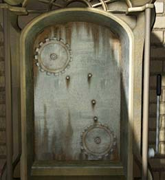
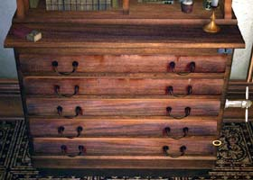
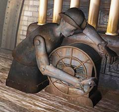
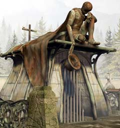
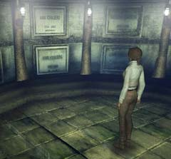

| 概要 | 地図 | |
| 淡いヒント集 | ヒント集 | 的確なヒント集 |
| 攻略最短ルート | Syberia 攻略へ |
教会
公証人の家で情報交換が終わったら、教会へ行くべきだ。なぜならば、効率がいいから。 ケイトが教会でやらねばならないことは、 ・教会内部の調査 ・エレベーターを動くようにする ・死体安置所の調査 である。死体安置所がどこにあるのか、分かるだろうか。
エレベーターのカラクリ
 ・動かないのは、何かが足りないためである。 ・見ての通り、歯車が回転して動いているらしい。では、この装置に足りないものは歯車である。 ・歯車を取り付けただけでは、動かないだろう。他にも稼働箇所があるはずだ。
教会の中にある十字架
・壁の汚れは、自然にできたものではない。 ・よく見ると、十字架の上の部分を釘のようなもので固定してある。十字架は動かすことができる。 ・中にあるものは、どこに使うのか考えてみよう。あまり重要なものではないので、近くにあるはずだ。
教会の引き出し
 ・引き出しを動かす鍵は必ずこの室内にある。鍵を見つけたら、右上の鍵穴に差し込もう。 ・上から三段目の引き出しは、明らかに不自然である。奥に何か見えないだろうか。 ・引き出しから見つかったアイテムは何に使うのだろうか? ・隠しスペースに置いてある書類などは必ず入手して置かなくてはならない。こんな場所に、意味のないものを置く人間などまずいないからだ。
教会の屋根裏にあるカラクリ人形
 ・エレベーターで上ったところにあるカラクリ人形である。周りを見ると、いくつものパイプとつながっているようだ。 ・教会でパイプがたくさんあるものといえば、ある楽器が思い出すかもしれない。 ・カラクリ人形の背中に、何かを差し込む部分がある。 ・試すことができるものは、全て試すべきである。1回だけであきらめてはいけない。 ・この人形が動くことで、教会の他の場所に変化はあっただろうか。
教会のすみにあるカラクリ人形
 ・このカラクリ人形ははじめ帽子をかぶっていたはずだ。 ・はたして帽子を外したことに意味があるのだろうか。 ・帽子の中をのぞいてみよう。何かあるはずだ。
死体安置室(棺桶ルーム)
 ・人の死体をあさるのは、決してほめられるべきではない。しかし、ここには仕事の関係する重要な人物の棺桶が置いていある。 ・その人物は、死んでいないはずだ。中には死体ではなく、重要なアイテムが入っている。 ・シリンダーとは、オルゴールに付けるものである。 |
| 概要 | 地図 | |
| 淡いヒント集 | ヒント集 | 的確なヒント集 |
| 攻略最短ルート | Syberia 攻略へ |